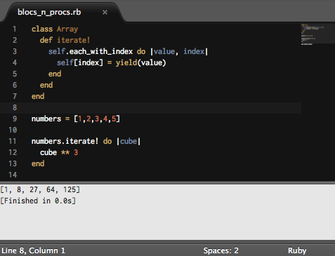
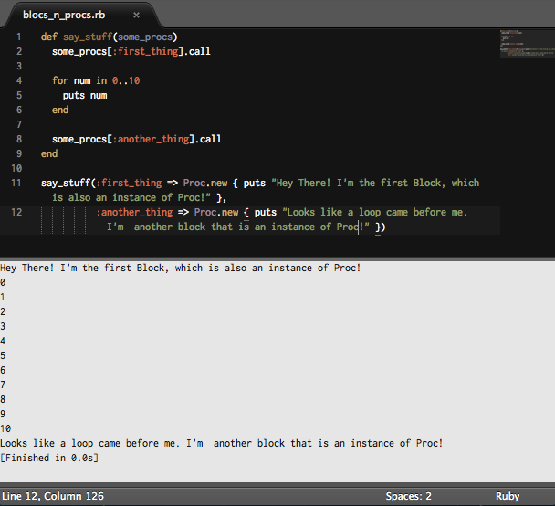

Week 6 - Blocks, Proc, and Lambda
Lambda, lambda, lambda!!!
January 31st, 2015
We're in week 6 of Phase-0 in DBC. I've picked up a ton of information, but I'd like to write about a topic I have little experience with to help better understand it. Let's talk about Ruby's Blocks, Procs, and Lambda, which are all VERY similar, but do some different quirky things.
Blocks:

When sending a method to an object, the code in the method's block interacts with the variables being passed to it. For example, if we iterate over an array with [1,2,3].each {|num| puts num}, the num variable inside the block is displaying each number as it iterates through the array. The above image displays a slightly more complicated explanation using the yield statement. As you send the iterate! method to numbers array, yield is called with the value and passes it to the block on line 12. It is then cubed in that block and returned back to yield and rewrites it back into the numbers array(remember, this example is destructive!). I chose the yield example because yield invokes a block.
Procs:
 This should make your head spin a little. Before I even try to explain what a Proc is, just know that a Block IS a Proc, just that it's not saved explicitly.
This should make your head spin a little. Before I even try to explain what a Proc is, just know that a Block IS a Proc, just that it's not saved explicitly.

Procs are able to be saved as passed multiple times. When they are create from the Proc class, they are just objects that can be passed as any other data type. Just think if you had a method that needed to pass multiple blocks of code? It can't be done with only one closure, however check the image above. There we have a method, say_stuff, that takes multiple Procs as an argument! Notice the output and how each block is executed.
Lambdas:
 There is a special type of Proc called a lambda. In the above image you probably noticed that a lambda looks very similar, but there are some key differences. A Lambda will throw an error if it receives an incorrect number of arguments. A Proc will just fill the missing argument with nil or whatever default you assign it.
When a Proc is executed inside a method, as soon as the Proc hits a return, the method stops processing the rest of the code. In a lambda, the code is executed and hits a return, but then will continue to execute the rest of the code. Well, the lambda returned something, then didn't report it, and continued to finish. This is why lambdas are often compared to what other languages call "anonymous methods".
There is a special type of Proc called a lambda. In the above image you probably noticed that a lambda looks very similar, but there are some key differences. A Lambda will throw an error if it receives an incorrect number of arguments. A Proc will just fill the missing argument with nil or whatever default you assign it.
When a Proc is executed inside a method, as soon as the Proc hits a return, the method stops processing the rest of the code. In a lambda, the code is executed and hits a return, but then will continue to execute the rest of the code. Well, the lambda returned something, then didn't report it, and continued to finish. This is why lambdas are often compared to what other languages call "anonymous methods".